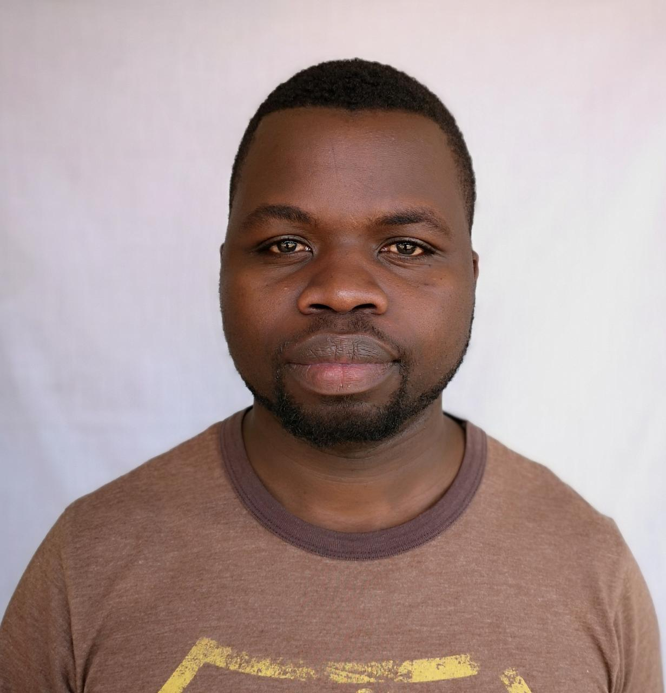

Born Bernard Kibet Ngetich, i grew up in the highlands in the south rift part of Kenya. Had a great childhood having been brought up in the farms. As i grew older though the interests would change, a city life was more enticing, then the computer age came and that too added to the intrigue.
Started out my educational journey in a local primary, then at mid primary shifted to a private school, this would be my first ever encounter with the love of my life -the Computer- something that altered my perception of a good life. I would take on Computer classes all through to high school- even though not examined but i had no doubt, this would be something i would love to pursue. Took on computer application packages after high school and that would give me a career in instructing computer classes, running a cyber cafe. I then self taught my self, Computer maintenance, software installation and small office networking through the internet.
My interests in computing roots back to my primary school days, but my interest in computer programming arose from the curiosity in computer's functionality. Although more inclined to data science, from research i learnt programming would be key in ensuring i could be good in data mining, manipulation and an whole-rounded data analyst. I searched the internet for online courses from w3schools to coursera, though with content, i needed something to help me visualize the programming in its entirety. I really wanted to pursue a career in IT but for lack of finances. Then on another random day i meet this guy in my local town who tells me of Moringa School and that given my interest an opportunity there would be integral, he made a recommendation and this would be a journey that would help me relive my dream - a taste of a city life and a career in IT. So despite the pandemic I am on a path towards achieving my dream
My dream destination is a journey to Cape town. Its not only picturesque but seemingly liveable.